Current Surveys
LEGA-C
Large Early Galaxy Astrophysics Census
PI: A. van der Wel
Survey Scientist: R. Bezanson
128-night VLT Large Program: a deep spectroscopic survey of uniformly selected massive galaxies at half the age of the Universe.
3D-HST Survey
PI - P. van Dokkum
A Spectroscopic Galaxy Evolution Survey with the Hubble Space Telescope.
Selected Science Highlights
(click to zoom on figure thumbnails)
Linking Galaxies Through Time
The Inside-Out Growth of Massive Galaxies
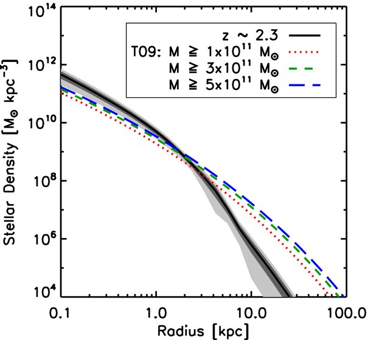 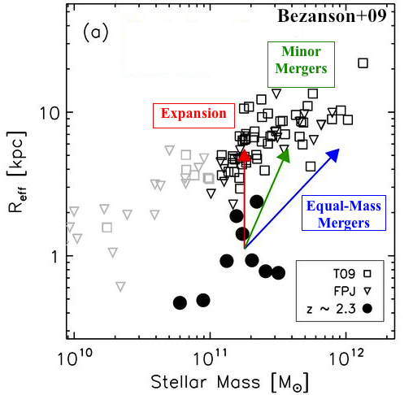Bezanson+09, van Dokkum+14
We established a feasible connection between the central cores of local massive elliptical galaxies and their extremely compact progenitors at high redshift, suggesting the importance of minor mergers in shaping the structures of massive galaxies.
Galaxy Dynamics
Absorption Line Kinematics
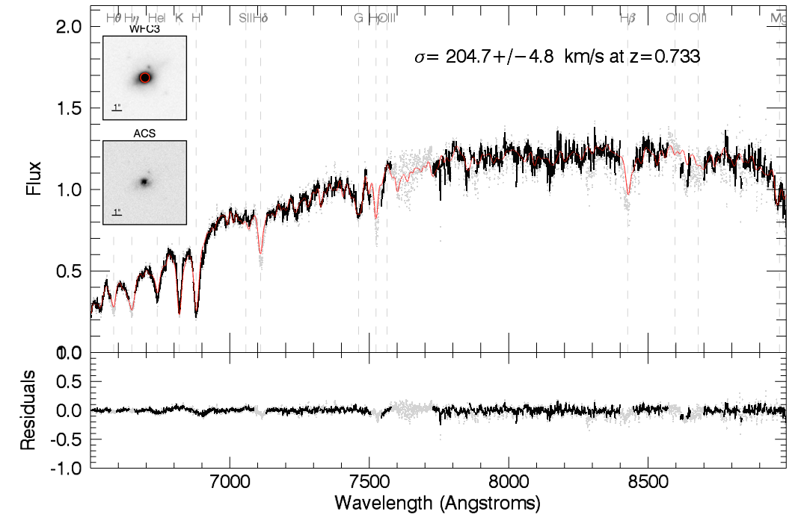 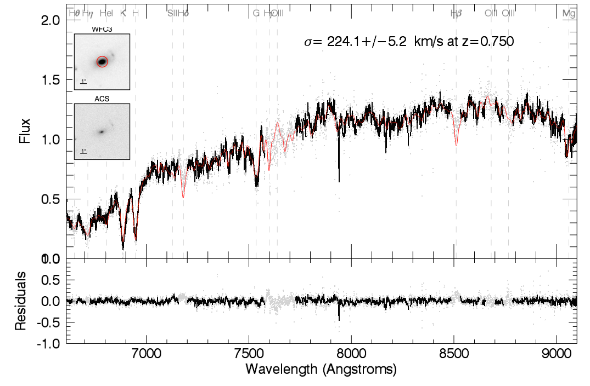 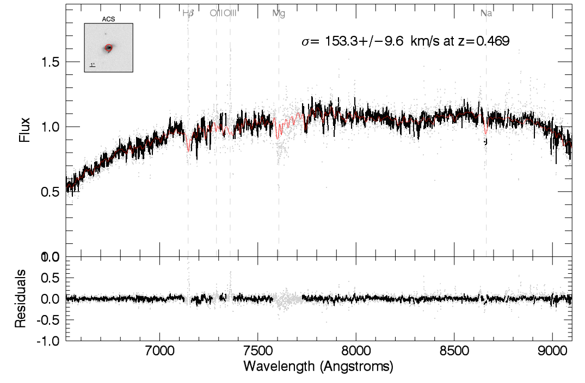Bezanson+13a, Bezanson+13b, Bezanson+15
Measuring stellar dynamics (velocity dispersions) for massive galaxies requires deep continuum and absorption line spectroscopy. At high redshifts, this requires many hours of integration and is only possible with the largest telescopes in the world. Much of my research involves directly measuring dynamics and calibrating galaxy pseudo-dynamics, or velocities inferred by galaxy masses and sizes. Pseudo dynamics have the benefit of being measurable for large, unbiased samples of galaxies from large imaging surveys.
Evolution of the Velocity Dispersion Function
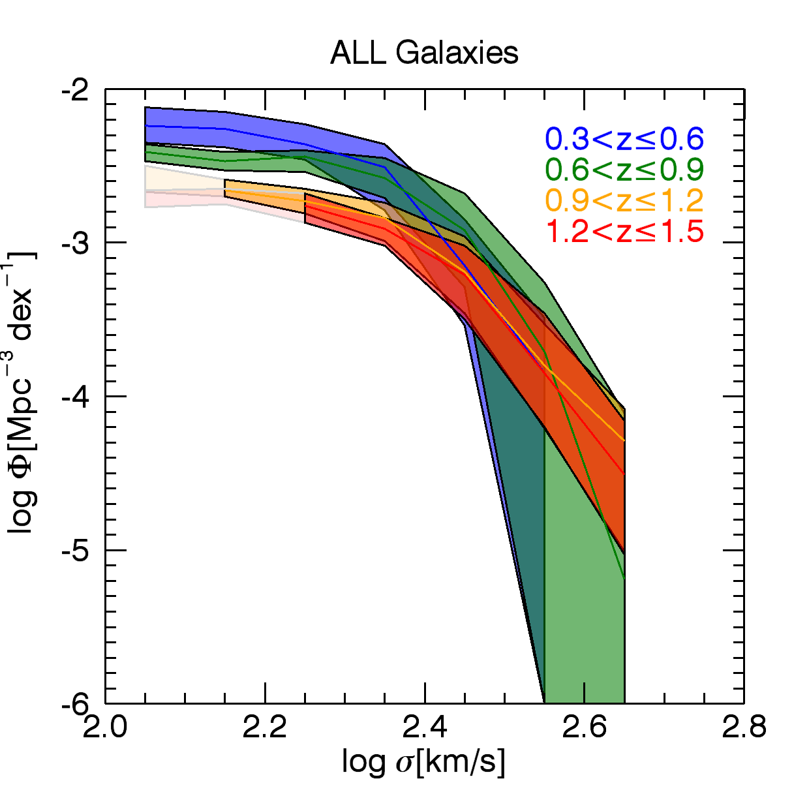 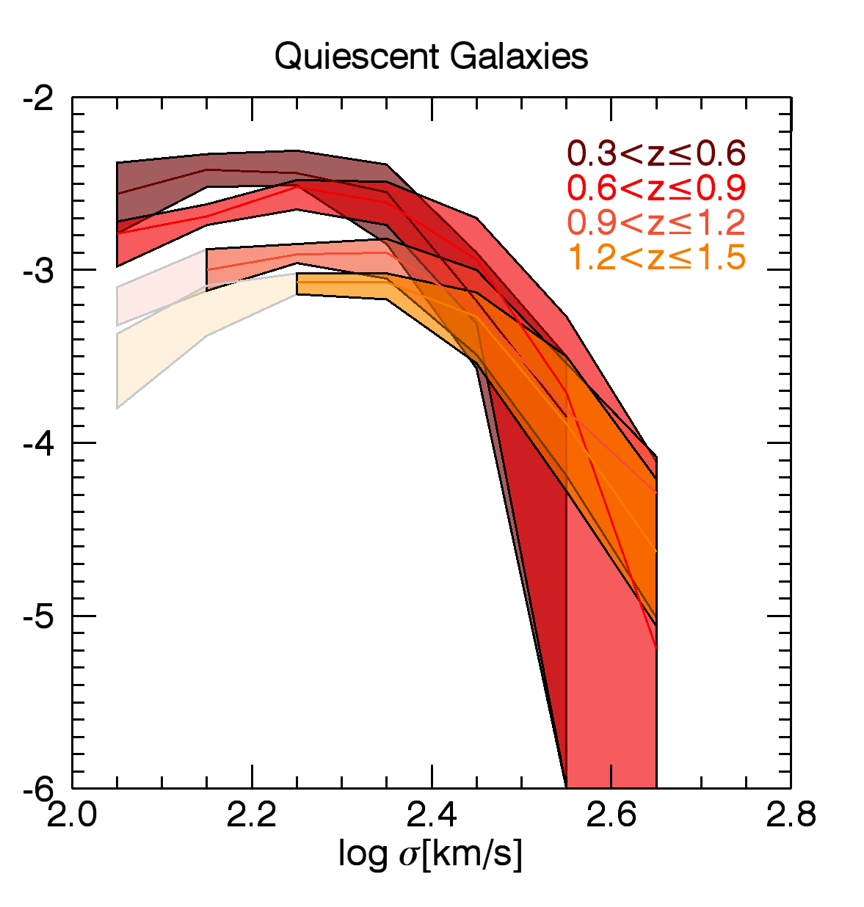 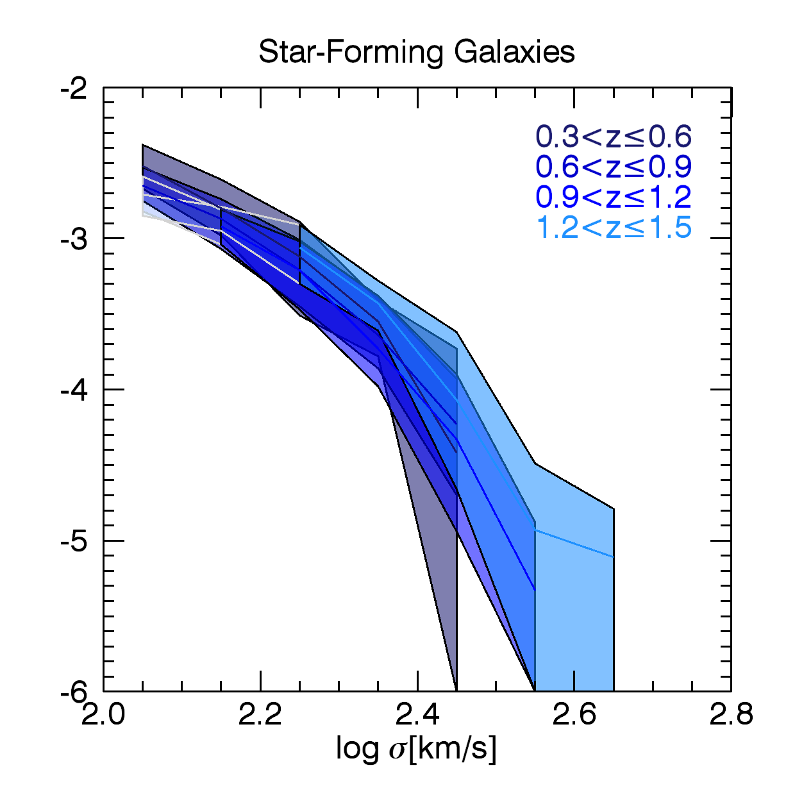Bezanson+11, Bezanson+12
Using inferred velocity dispersions we investigated the evolution of the number density of galaxies as a function of velocity dispersion, the "velocity dispersion function" (VDF). We demonstrated that overall the VDF is quite constant with redshift (left panel), with a slight buildup in the number of galaxies with low velocity dispersions. By splitting the sample into star-forming and quiescent galaxies, we find that the weak evolution of the VDF is driven by a growing population of quenched galaxies with low velocity dispersions (center and right panels).
Mass Fundamental Plane
Check out these 3-D Movies of the projections and evolution of the traditional (luminosity) and mass Fundamental Planes and Virial Plane.
Measured to High Redshift (z~2)
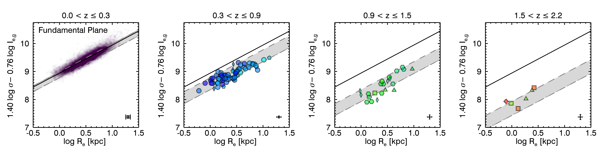 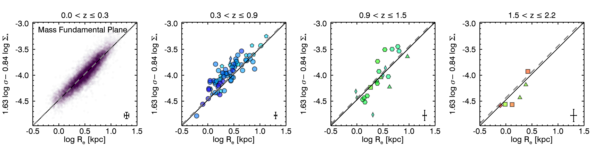Bezanson+13b
We demonstrate that massive galaxies lie on a Fundamental Plane since z~2, which evolves in normalization with time. We can account for that normalization by including the stellar mass-to-light ratio and establish that galaxy evolution occurs within a relatively stable Mass Fundamental Plane.
Holds for a Diverse Population of Galaxies
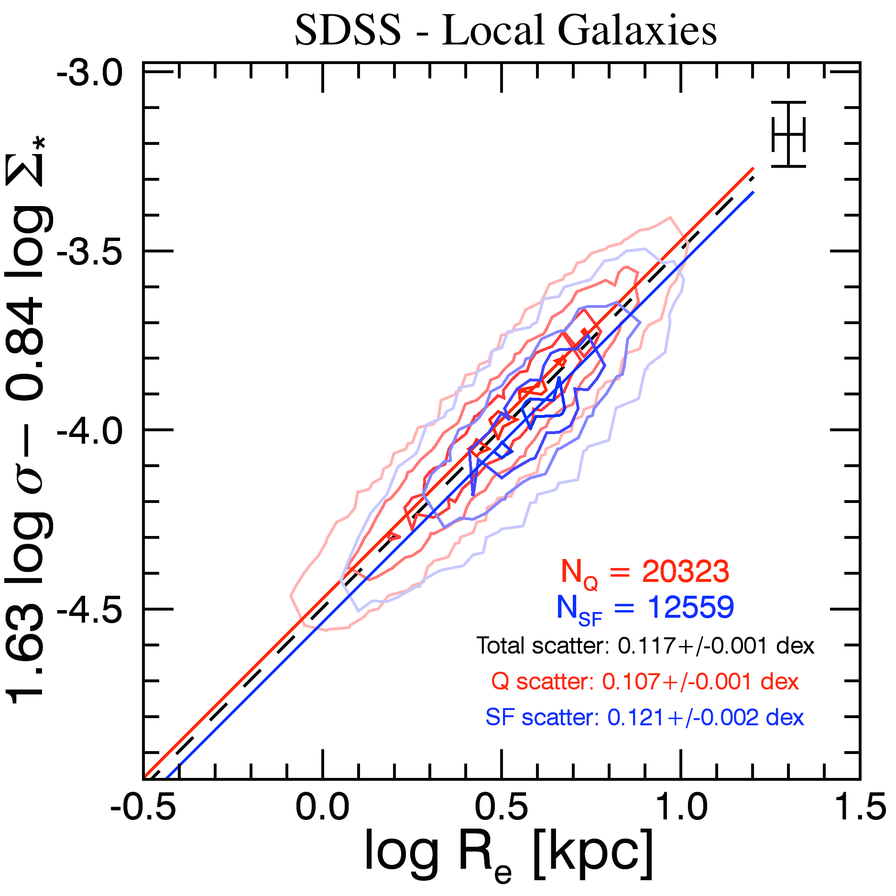 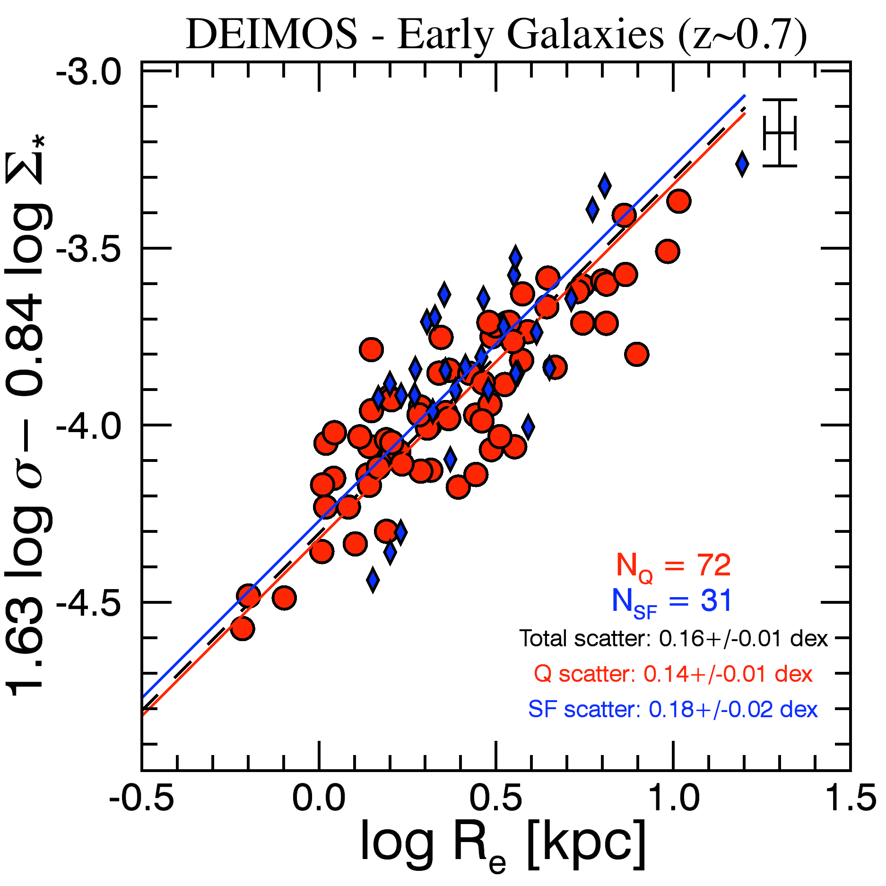Bezanson+15
As observations of massive galaxies probe further into the past, it has become clear that the population massive galaxies have evolved dramatically since z~2. Although massive galaxies today form a structurally and dynamically uniform read and dead population, massive galaxies at high redshift have evolved in size, mass, shape, and stellar populations.
In order to follow those galaxies through different cosmic epochs without introducing increasingly important progenitor biases, we must define scaling relations that can be fairly applied to the diversity of massive galaxies at high redshifts, not just local ellipticals. Here we show that all massive galaxies - star-forming and quiescent, disklike and elliptical - lie on the same Mass Fundamental Plane, both locally and at z~0.7. Therefore the mass fundamental plane provides an optimal framework within which to follow evolving galaxies through cosmic time: it should hold for all galaxies despite quenching, size, or morphological evolution.